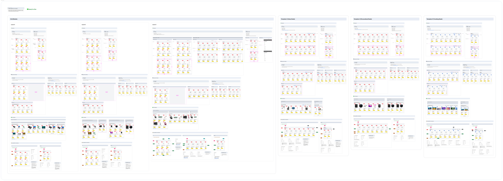

Sales EventTransformation
Rebuilding a static, fragmented deals page into a modular, personalized event ecosystem. Designed to scale across every major sales event in the calendar year.
A page built for marketing, not for people
Best Buy's sales events, Black Friday, Cyber Monday, Memorial Day, and 4th of July, for example, are high-pressure weeks where millions of customers arrive with urgency, in a compact window of time. These moments drive a significant portion of annual revenue.
Unfortunately, the experience hadn't kept up. Deals were buried in long, unstructured grids. Teams rebuilt the same brittle pattern every year. There was no shared architecture, personalization integration, or a foundation that could flex across events.

Before — Desktop

Before — Mobile
Grounding in real customer behavior
Research spanned from ContentSquare analytics, usability sessions, empathy mapping, and competitive benchmarking across Target, Amazon, Walmart, Etsy, and Sephora. Three distinct user archetypes emerged, each with different expectations for the same event page:
Seasonal Deal Hunter arrived through a paid search, with a price-first mentality, and is skeptical. Needs bold event branding and instant deal access.
Engaged Best Buy Customer returning shopper, logged in. Expects personalized deals relevant to past purchases.
Total Member high-value, app-engaged paid Best Buy member. Motivated by exclusivity, member-first pricing, and early access.
The same event page needed to serve three fundamentally different mental models without fragmenting into three separate experiences.
Three acts. One connected system.
The old experience was basically a catalog. The new one needed to be a system with modular containers reusable across every event without rebuilding. We evaluated 7 information architecture (IA) layout approaches and selected a hybrid: defined top-down flow (Inspire → Discover → Convert) with AML powering product selection within each section.
Every module maps to a specific moment in the customer's mindset:
- Event hero + branding
- Sale narrative + trust signals
- Category carousels
- Thematic deal stories
- Budget-based filtering
- "Deals for You" (AML)
- Simplified SKU cards
- Price clarity + urgency
- Fast add-to-cart

Module System Overview
The same broken pattern, shipped every year
- No visual hierarchy where modules competed for attention
- Heavy scroll fatigue because deals were buried
- Rebuilt from scratch for every event
- No personalization or AML integration
- Event identity was lost once users filtered
- Clear hierarchy with streamlined storytelling to guide attention
- Deals surface faster with category-first navigation
- Modular system scales across 6+ events
- AML-powered personalization throughout
- Persistent event identity across all states

Final — Desktop

Final — Mobile
Techtober 2025 usability research
Before scaling system-wide, we ran usability sessions during Techtober to measure comprehension, navigation, and engagement in real customer sessions.
What we validated
- Shoppers recognized the event branding immediately and found products quickly.
- Red price treatment built trust.
- The category carousel made browsing intuitive.
- Several participants noticed personalization unprompted.
What we refined
- Persistent event identity across filters and PLPs.
- Standardized deal signals (red + strike-through + event badge).
- "Back to Sale" anchor.
- Urgency cues moved above the fold.
Measurable impact at massive scale
- 18% conversion lift, translating to $4M–$7M in annual revenue impact.
- +31 basis points mobile engagement lift, which was approximately $10M in influenced revenue.
- 15% increase in module interactions for priority SKUs and featured deal stories.
The systemic impact is equally significant, with the modular architecture now scaling across 6+ annual events without the one-off rebuild cycle, design-to-launch time dropping substantially, and AML integration laying the foundation for increasingly personalized experiences in future events.